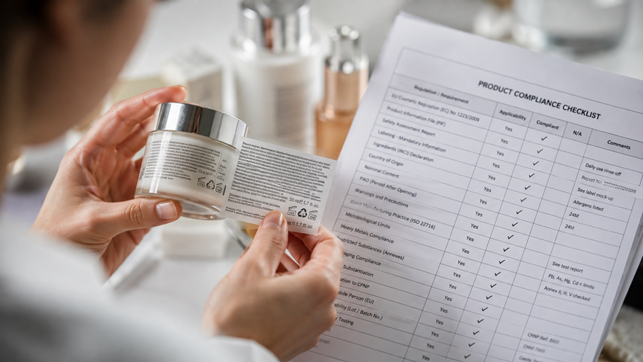
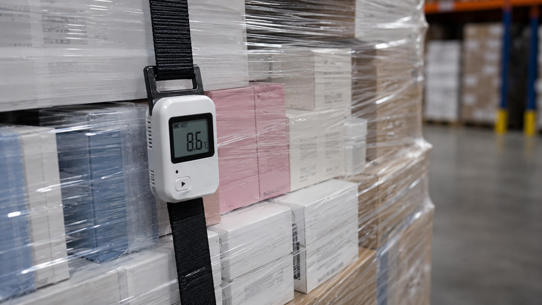

작성: 첼로스퀘어(삼성SDS 물류) 최종 업데이트: 2026년 7월 29일
English edition:
Importing and Distributing K-Beauty in the EU: 5 Logistics Risks to Manage — Compliance Data, Product
Stability, Batch Traceability, Dangerous Goods and High-SKU Inventory Management
규제 데이터부터 품질, 배치 추적, 위험물, 다품종 재고까지
핵심 요약
EU에 K-뷰티를 수입·유통할 때 핵심 물류 리스크는 다섯 가지입니다: ① 규제·라벨 데이터 불일치, ② 제품별 보관·운송 조건 부적합, ③ 배치(로트) 추적 미흡, ④ 위험물 오분류, ⑤ 다품종·수요 변동에 따른 품절·폐기. 화장품은 EU 시장에서 규제·품질·안전·재고가 촘촘히 얽힌 상품군이라, 문제는 생산 단계에서 끝나지 않고 EU 출시·재고 운영 단계에서 본격적으로 드러납니다. EU 시장 출시를 위해서는 EU 역내 Responsible Person 지정, 안전성 평가 및 CPSR 작성, CPSR을 포함한 제품 정보 파일(PIF) 작성·유지, GMP 준수, 라벨 요건 충족, CPNP 통지 등이 필요하며, 이 가운데 CPNP는 인증이 아니라 통지 시스템입니다. 실무에서 이 다섯 리스크를 관리하면 출시 지연·품질 클레임·리콜·품절·폐기를 줄일 수 있습니다.
| # | 물류 리스크 | 발생할 수 있는 문제 | 핵심 관리 조치 |
|---|---|---|---|
| 1 | 규제·라벨 데이터 불일치 | 시장 출시·수입통관·판매 지연 | SKU·판매시장·라벨/아트워크 버전·로트를 연결해 관리 |
| 2 | 보관·운송 조건 부적합 | 제형 변화, 누액, 품질 클레임 | 민감 SKU 식별 + 보관·운송 조건 관리 |
| 3 | 배치 추적 미흡 | 리콜 범위 확대·대응 지연 | 입고~반품 로트 연결, 재고 격리 체계 |
| 4 | 위험물 오분류 | 항공 예약 거절, 재포장, 선적 지연 | 선적 전 분류 확인 + 운송수단별 포장·표시·서류 검토 |
| 5 | 다품종·수요 변동 | 품절과 장기재고 동시 발생 | ABC-XYZ, 기한 적용 SKU의 FEFO, 빠른 보충 |
범위 안내
이 글은 EU 시장 기준입니다. 그레이트브리튼(GB: 잉글랜드·스코틀랜드·웨일스)은 CPNP가 아니라 별도의 SCPN 체계를 사용하며, UK에 설립된 Responsible Person이 필요합니다. 북아일랜드에는 EU 화장품 규정과 CPNP 체계가 적용되며, Responsible Person은 북아일랜드 또는 EEA에 설립돼 있어야 합니다.
왜 K-뷰티는 일반 소비재보다 EU 물류가 복잡한가
K-뷰티 물류의 복잡성은 규제뿐 아니라 상품 자체의 SKU 구조에서도 시작됩니다. K-뷰티는 신제품·한정 기획, 색상·용량·제형 변형이 활발하고 세트·샘플까지 더해져 SKU 구성이 빠르게 달라지는 경우가 많습니다. EU에 진출하면 판매 언어와 유통채널 조건이 회원국마다 달라, 동일 제품도 판매시장과 라벨 버전에 따라 재고를 구분 관리해야 할 수 있습니다. 인기 SKU 품절과 롱테일 SKU 장기재고가 동시에 발생하는 구조도 심화됩니다. 즉 출발점은 관리할 SKU와 로트가 애초에 많고 빠르게 바뀐다는 사실입니다.

리스크 1. 규제·라벨 데이터 불일치
규제 적합성은 출시 전에 결정되지만, 시장에서 유지되는 것은 물류 데이터입니다. EU 시장 출시를 위해서는 EU 역내 Responsible Person을 지정하고, 안전성 평가를 거쳐 제품 안전성 보고서(CPSR)를 작성하며, CPSR을 포함한 제품 정보 파일(PIF)을 작성·유지해야 합니다. 이와 함께 Article 19에 따른 라벨 요건, 우수제조기준(GMP) 준수, Article 13에 따른 CPNP 통지 등 관련 의무를 충족해야 합니다. RP 지정과 CPNP 통지는 전체 요건 가운데 일부입니다. (PIF는 마지막 배치가 시장에 출시된 날부터 10년간 유지합니다.)
CPNP는 인증이나 판매 승인 절차가 아니라 통지 시스템입니다. EU 법상 규정 준수 책임의 중심은 Responsible Person에게 있으며(EU 밖에서 제조된 제품은 원칙적으로 EU 수입자가 RP가 되거나, 서면 위임으로 EU 역내 주체를 RP로 지정합니다), 수입자·유통자도 공급망 내 지위에 따라 각자의 의무를 부담합니다. 물류 운영의 과제는 제품의 규제 적합성이 운송·보관·유통 과정에서 훼손되지 않도록 관련 데이터를 정확히 연결·유지하는 것입니다.
실무에서 무너지는 지점은 데이터 연결이며, 데이터는 성격별로 나눠 관리하는 것이 정확합니다. 제품·규제 마스터에는 제품명, Responsible Person, CPNP 통지 상태, 판매 가능 시장, 라벨 요건, 보관 조건, 위험물 분류 상태와 라벨·위험물 판단에 필요한 성분·규제 참조정보를 관리합니다. 라벨·아트워크 마스터에는 적용 언어, 버전, 적용 시작일을, 로트·재고 데이터에는 배치번호, 제조일 또는 최소사용기한, 수량, 위치, 판매 가능·보류 상태를 연결하는 방식입니다.
즉 EU 화장품 물류의 실질적 관리 단위는 단일 '제품'이 아니라 'SKU × 판매시장 × 라벨·아트워크 버전 × 로트'입니다.
2026년 시의성. EU는 향료 알레르겐 표시 규정을 확대했습니다(Regulation (EU) 2023/1545). 새 규정에 맞지 않는 제품을 EU 시장에 최초 출시(placing on the market)할 수 있는 전환기간은 2026년 7월 31일 종료되며, 그 전에 적법하게 출시된 제품은 2028년 7월 31일까지 유통(making available on the market)할 수 있습니다. 전환기에는 구형·신규 라벨 재고 분리, 회원국별 라벨 재작업·스티커 부착, 신·구 라벨·아트워크 버전 혼재 방지, 판매 가능·보류 재고 구분, 리패킹 시 로트 추적성 유지가 실제 물류 과제가 됩니다.
현지 라벨 작업은 단순한 창고 부가작업으로만 볼 수 없습니다. 이미 한 회원국에서 출시된 제품을 다른 회원국에서 판매하기 위해 유통자가 자발적으로 라벨 요소를 번역해 국가법을 충족하는 경우에는 Article 13(3)에 따른 유통자 정보를 Commission에 전자적으로 제출해야 합니다. 단순한 번역 자체는 유통자를 자동으로 Responsible Person으로 만들지 않습니다. 다만 제품을 자신의 이름·상표로 출시하거나, 적합성에 영향을 줄 수 있는 방식으로 제품이나 표시를 변경하면 해당 유통자가 Responsible Person이 될 수 있으므로 사전 검토와 엄격한 버전관리가 필요합니다.
여기에 EU 화장품 규정과는 별도로, 2026년 8월 12일부터 일반 적용되는 EU 포장재 규정(PPWR)이 겹치면 상품·이커머스·운송 포장까지 함께 검토해야 합니다. 다만 PPWR의 표시·재생원료·재사용 등 세부 의무는 조항별 적용 시점이 달라, 8월 12일부터 모든 포장을 일괄 교체해야 한다는 의미는 아닙니다.

리스크 2. 제품별 보관·운송 조건 부적합
화장품 품질관리의 핵심은 '무조건 냉장'이 아니라 제품별 안정성 관리입니다. 제품마다 제조사가 설정한 안정성 조건이 다르므로, 관건은 냉장 여부가 아니라 제품별 보관 조건과 온도 이탈 대응 기준을 어떻게 관리하느냐입니다. 모든 SKU에 실시간 온도 모니터링을 적용할 필요는 없지만, 고온·동결·장기 체류에 민감한 SKU를 사전에 식별하고 항로와 계절에 따라 데이터로거 적용 여부를 결정하는 접근이 현실적입니다.
EU에서는 이 품질 관리가 규정 준수와 직접 연결됩니다. EU 화장품 규정은 유통자가 제품을 시장에 제공하기 전에 특정 라벨 정보와 언어 요건, 해당되는 경우 최소사용기한이 지나지 않았는지를 확인하도록 하며(Article 6(2)), 유통자가 제품을 책임지고 있는 동안 보관·운송 조건으로 인해 제품의 규정 적합성이 훼손되지 않도록 관리할 것을 요구합니다(Article 6(4)). 따라서 운송 중 온도 이탈 시 출고 승인 기준, 반품 제품의 재판매 가능 여부 판단도 이 관점에서 정해야 합니다.
리스크 3. 배치(로트) 추적 미흡
EU 규정이 요구하는 '법적 의무'와 물류의 '운영 모범사례'를 구분해야 합니다. EU 화장품 규정은 제품 라벨에 배치번호(또는 제품을 식별할 참조번호)를 표시하고(Article 19), 공급망 내 거래 상대방(공급처와 공급 대상)을 식별하도록 요구합니다. 이 식별 의무는 해당 배치가 유통자에게 공급된 날로부터 3년간 적용됩니다(Article 7). 반면 WMS 로트 단위 재고관리, 채널별 로트 분배 이력, 시스템상 격리, 리콜 범위 자동 산출은 규정이 직접 정한 방식이 아니라, 그 의무를 빠르고 정확하게 이행하기 위한 운영 권장 방식입니다.
유통기한 표시는 물류상 오해가 잦습니다. 최소사용기한이 30개월 이하인 제품에는 날짜형 최소사용기한을 표시합니다. 30개월을 초과하는 제품은 날짜 표시가 의무가 아니며, 개봉 후 내구성 개념이 관련되지 않는 경우를 제외하고 개봉 후 사용기간(PAO)을 표시해야 합니다. 여기서 중요한 구분이 있습니다. PAO는 소비자가 제품을 개봉한 이후의 사용기간이므로 창고 재고의 만료일과 같은 개념이 아닙니다. PAO만 표시된 제품은 제조사나 Responsible Person이 설정한 내부 품질보증기간·출하 가능기간 등의 기준을 별도로 관리해야 하며, 날짜형 기한이 관리되는 제품에는 임박 재고부터 출고하는 FEFO를 적용하는 것이 적합합니다.
시장 민감도 지표. EU 위험제품 신속경보 시스템(Safety Gate)의 2025년 보고서에서 화장품은 전체 경보(4,671건)의 36%를 차지해 가장 많이 신고된 카테고리였습니다. 단, 이 36%는 EU 시장 화장품의 불량률이 아니라 그해 전체 위험제품 경보 중 화장품 비중이며, 화장품 경보의 약 80%는 금지 향료인 Butylphenyl Methylpropional(일명 Lilial) 검출과 관련됐습니다. 그럼에도 문제 발생 시 국경 반입 중단·시장 철수·온라인 판매목록 삭제·소비자 리콜로 이어질 수 있어, 성분 적합성과 로트 단위 추적·격리 능력이 중요합니다.
K-뷰티에서 흔한 샘플·테스터·증정품도 상업활동 과정에서 무상으로 제공되면 EU 규정상 시장 제공의 범위에 포함될 수 있습니다. 정식 판매재고와 다른 프로세스로 처리하더라도 별도의 로트·출고 기준을 두고 추적하는 것이 좋습니다.
리스크 4. 위험물 오분류
모든 화장품이 위험물은 아니지만, 일부 SKU는 성분·물성·추진제·포장에 따라 위험물(Dangerous Goods)로 분류될 수 있습니다. 같은 브랜드 제품 중 일부만 항공 예약이나 포장 방식이 달라지는 이유가 여기에 있습니다.
- 향수·알코올 함유 제품: 알코올 농도·인화점 등에 따라 인화성 액체 Class 3 분류 검토가 필요합니다.
- 에어로졸 제품: 추진제·위험 특성에 따라 Class 2로 분류될 수 있습니다.
- 네일 제품·리무버: 포함된 용제·인화점에 따라 Class 3에 해당할 수 있습니다.
기본 분류를 확인한 뒤 운송수단별 요건을 검토하는 순서가 정확합니다. 항공은 IATA DGR, 해상은 IMDG Code, 유럽 도로운송은 ADR에 따라 포장·마킹·라벨링·서류와 허용수량을 검토하며, 철도운송이 포함되면 RID 등 해당 규정을 별도로 확인합니다. 안전 데이터시트(SDS)의 운송정보 확인이 출발점이지만, SDS 보유만으로 분류가 끝나는 것은 아니며 제조사 정보와 운송사 조건을 함께 확인해야 합니다.
EU 특화 포인트 — 복합운송과 세트상품. 아시아에서 항공·해상으로 EU에 도착한 화물은 흔히 역내 도로운송으로 이어집니다. 기본 위험물 분류를 바탕으로 항공·해상·도로·철도 구간별 허용수량, 포장, 마킹·라벨링, 서류와 운송사 조건이 서로 이어지는지를 확인해야 합니다. 또한 위험물에 해당하는 SKU가 하나라도 포함된 세트·기획상품은 해당 포장물이나 화물에 위험물 요건이 적용될 수 있어, 출고 직전이 아니라 세트 조립 단계에서 미리 확인해야 성수기 선적 지연을 피할 수 있습니다.
리스크 5. 다품종·수요 변동에 따른 품절·폐기
전 SKU를 동일한 재고정책으로 운영하기보다, 판매량과 수요 변동성에 따라 현지 배치 수준을 달리해야 합니다. 사용기한이 있는 제품을 과다 재고로 쌓으면 폐기 위험이 커지고, 부족하면 인기 SKU 품절로 판매 기회를 잃습니다. SKU를 성격별로 나눠 다른 재고 정책을 적용하는 접근이 필요합니다.
- 판매량 높음·변동성 낮음: 유럽 현지 창고 상시 재고
- 판매량 높음·변동성 높음: 빠른 보충(리오더) 체계
- 회전 낮은 롱테일: 중앙집중 또는 주문 연계
이를 재고관리 방식으로 표현하면, 판매 기여도를 보는 ABC 분석과 수요 변동성을 보는 XYZ 분석을 결합하는 ABC-XYZ 접근입니다. 유럽 현지에서 수행하면 유리한 작업으로는 세트 조립, 회원국별 라벨링·스티커 부착, 리패킹, 신제품 초도 물량 배치와 리오더 기준 설정, 국가 간 재고 이전이 있습니다. 수요 급증 시 해상·항공을 조합해 리드타임·비용 균형을 맞추고, 사용기한 임박 재고는 관련 법규와 브랜드의 품질·판매정책이 허용하는 범위에서 별도 채널로 소진합니다.
결론
EU K-뷰티 물류는 규제 설명이 아니라 '출시 지연·품질 손실·품절·폐기'를 줄이는 문제입니다. 다섯 리스크(규제 데이터 연결, 제품별 안정성, 배치 추적, 위험물 분류, 다품종 재고)는 하나만 어긋나도 통관 지연·품질 클레임·품절·폐기로 이어집니다. 반대로 규제 데이터를 반영한 운송·보관 운영부터 품질 유지, 위험물 처리, 다품종 풀필먼트까지 하나의 흐름으로 설계하면, 그 복잡성 자체가 브랜드의 유럽 확장 속도를 만드는 경쟁력이 됩니다.
자주 묻는 질문 (FAQ)
- Q. K-뷰티를 EU에 팔려면 CPNP 인증을 받아야 하나요?
- 아니요. CPNP는 인증이나 제품 승인 절차가 아니라 EU 시장 출시 전 정보를 제출하는 통지 시스템입니다. EU 시장 출시를 위해서는 EU 역내 Responsible Person 지정뿐 아니라 안전성 평가와 CPSR, CPSR을 포함한 PIF, GMP 준수, 적합한 라벨, CPNP 통지 등 관련 규정 전반을 충족해야 합니다. 규정 준수 책임의 중심은 Responsible Person에게 있습니다.
- Q. 화장품을 EU로 보낼 때 향수와 에어로졸은 항상 위험물인가요?
- 제품명만으로 정해지지 않습니다. 향수는 알코올 농도·인화점에 따라 Class 3, 에어로졸은 추진제에 따라 Class 2로 분류될 수 있으나, 실제 분류는 성분·농도·포장·용량·면제 조건에 좌우됩니다. 선적 전 운송수단별(IATA DGR/IMDG/ADR) 확인이 필요합니다.
- Q. EU 화장품 향료 알레르겐 라벨 규정은 언제부터 적용되나요?
- Regulation (EU) 2023/1545에 따라, 새 규정 비적합 제품의 EU 시장 최초 출시 전환기간은 2026년 7월 31일 종료됩니다. 그 전에 적법 출시된 제품은 2028년 7월 31일까지 유통할 수 있습니다.
- Q. EU 회원국마다 별도의 화장품 라벨을 만들어야 하나요?
- 반드시 회원국별로 별도 포장을 만들어야 하는 것은 아닙니다. 여러 언어를 병기한 공통 포장을 사용할 수도 있지만, 용량·최소사용기한·사용상 주의사항·제품 기능 등 일부 표시정보의 언어는 최종 판매 회원국의 법에 따라야 합니다. 이미 한 회원국에서 출시된 제품을 다른 회원국에 제공하면서 유통자가 국가법을 충족하기 위해 라벨을 자발적으로 번역하는 경우에는 Article 13(3)에 따른 유통자 통지를 해야 합니다.
- Q. EU 화장품의 배치번호 표시는 법적 의무인가요?
- 네. EU 화장품 규정은 라벨에 배치번호(또는 식별 참조번호) 표시와 공급망 내 거래 상대방 식별을 요구하며, 이 식별 의무는 배치 공급일로부터 3년간 적용됩니다. 다만 WMS 로트관리나 FEFO 출고는 이 의무를 이행하기 위한 운영 권장 방식이지 규정이 직접 정한 방식은 아닙니다.
- Q. 세트상품에 향수가 포함되면 항공운송이 불가능한가요?
- 반드시 불가능한 것은 아니지만, 위험물에 해당하는 SKU가 포함되면 그 포장물·화물에 위험물 포장·표시·서류·수량 제한이 적용될 수 있습니다. 세트 조립 전에 운송 분류를 확인해야 성수기 선적 지연을 피할 수 있습니다.
- Q. 최소사용기한과 PAO는 어떻게 다른가요?
- EU 규정상 최소사용기한이 30개월 이하인 제품은 날짜형 최소사용기한을 표시합니다. 30개월을 초과하는 제품은 날짜 표시가 의무가 아니며, 개봉 후 내구성 개념이 관련되지 않는 경우를 제외하고 PAO를 표시해야 합니다. PAO는 소비자가 개봉한 이후의 기간이므로 창고 재고의 만료일과 동일하지 않으며, PAO만 표시된 제품은 제조사 또는 Responsible Person의 내부 출하 가능기간 등 별도 운영기준이 필요합니다.
아시아–EU K-뷰티 물류가 고민이라면
첼로스퀘어와 유럽향 화장품의 해상·항공 운송, 현지 보관, 포장·라벨링, 반품 및 다품종 풀필먼트 운영 방안을 검토해 보세요. 제품 특성과 판매 계획에 맞춰 국제운송과 유럽 재고 운영 방식을 연결할 수 있습니다.
관련 글: 「화장품 물류가 일반 화물보다 복잡한 이유 — K-뷰티 물류를 어렵게 만드는 규제·품질·위험물·SKU 4가지」 (범용 허브편)
참고문헌
본문 사실관계의 근거가 된 주요 출처입니다. 규제 내용은 발행 시점 기준이며, 최신 개정은 원문에서 확인하세요.
- 1. 유럽연합, 화장품 규정 Regulation (EC) No 1223/2009 (통합본) — 제4조 Responsible Person, 제6조 유통자 의무(라벨·언어 확인 및 보관·운송 조건 유지), 제7조 공급망 추적성(3년), 제13조 통지, 제19조 라벨(최소사용기한·PAO·배치번호). EUR-Lex(eur-lex.europa.eu).
- 2. 유럽연합 집행위원회, 화장품 통지 포털(CPNP) — 출시 전 제품 통지 시스템(인증·판매 승인 아님). European Commission, Cosmetics.
- 3. 유럽연합, 향료 알레르겐 표시 규정 Commission Regulation (EU) 2023/1545 — 전환기한 2026-07-31(최초 출시)/2028-07-31(유통). EUR-Lex(eur-lex.europa.eu/eli/reg/2023/1545).
- 4. 유럽연합, 포장·포장폐기물 규정(PPWR) Regulation (EU) 2025/40 — 2026-08-12 일반 적용(세부 의무는 조항별 단계 적용). EUR-Lex / European Commission.
- 5. 유럽연합 집행위원회, Safety Gate 2025 연차보고서 — 전체 경보 4,671건 중 화장품 36%, 화장품 경보의 약 80%가 금지 향료 관련. op.europa.eu(Safety Gate 2025 report).
- 6. 위험물 운송 규정(제도): IATA 위험물규정(DGR, 항공)·IMDG Code(해상, IMO)·ADR(유럽 도로, UNECE)·RID(철도) — 항공 위험물 분류 책임은 화주. 업계 해설: DHL(dhl.com).
- 7. GOV.UK, 영국(GB) 화장품 통지(SCPN)·UK Responsible Person 및 북아일랜드 적용 안내. gov.uk.
- 8. 식품의약품안전처(MFDS), 2026년 상반기 화장품 수출 실적(약 70억 달러, 전년 동기 대비 27.3% 증가; 미국 최대 시장, 유럽 성장). 관련 보도 포함.
- 9. 첼로스퀘어(삼성SDS 물류), 서비스 안내(국제운송·통관·창고·포장/라벨링·반품·풀필먼트). cello-square.com.
▶ 본 콘텐츠는 EU 화장품 물류 운영에 관한 일반적인 정보를 제공하기 위한 것으로, 법률·규제 또는 위험물 분류 자문을
구성하지 않습니다. 제품별 적용 요건은 Responsible Person, 관할기관, 제조사 및 관련 전문가를 통해 최신 내용을
확인해야 합니다.
▶ 본 콘텐츠는 사전 동의 없이 2차 가공 및 영리적 이용을 금합니다. © Cello Square (Samsung SDS). All rights
reserved.